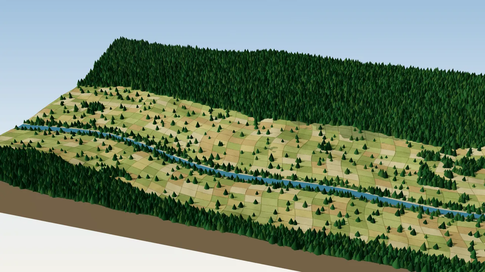

From Terrain to Planned City
Twelve stages on one illustrative landscape: from natural terrain and elevation analysis to grading, infrastructure, protected buffers and a planned town.

Stage 1 of 12: Natural terrain
* Illustrative assumptions. The landscape, dimensions, buffer distances and engineering parameters are generated for demonstration; they are not survey measurements, project data or regulatory standards.
How the sequence is built
One procedurally generated landscape is used for every stage: the same terrain, river, forest and camera. Development is allowed only where slope is below the limit and outside the river setback and forest buffer; grading, roads, drainage, plots and buildings are then derived from that footprint.
It illustrates the workflow behind my planning analysis; the real project outputs are in the planning case studies
| Parameter (illustrative) | Value |
|---|---|
| Landscape extent | 2.0 × 1.4 km |
| Contour interval | 5 m |
| Development slope limit | 15° |
| Platform (terrace) step | 5 m |
| River setback | 50 m from the channel centreline |
| Forest conservation buffer | 30 m |
| Road widths: arterial, collector, local | 14 m, 9 m, 6 m |
| Lot frontage | 34 m |